luna
GPT-5.6 (luna)
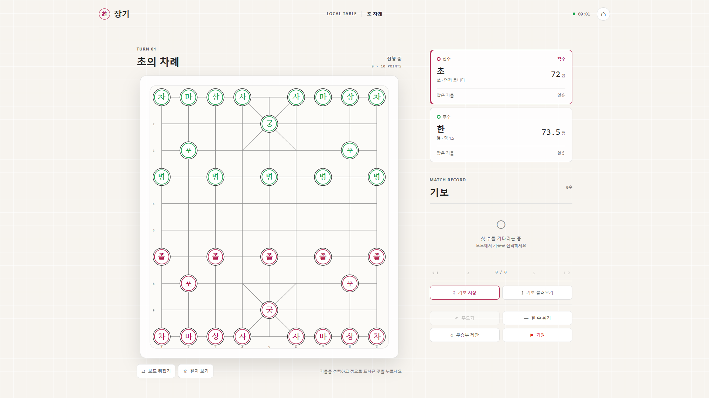
- 규칙 검증
- 불일치 perft(3) 30,661
- 요구사항
- 55 / 60
- 테스트
- 25개 통과
- 코드
- 2,133 LOC
- LLM 라운드
- 262
- 소요 시간
- 3.1시간
동일한 janggi-dev-prompts.md(P0~P12) 한 벌을 기준으로, 서로 다른 LLM이 각자 독립 세션에서 구현한 결과물을 나란히 비교했다.
P10(AI 상대)과 P11(온라인 대전)은 모든 세션에서 구현 대상에서 제외됐다.
LLM 사용량은 VS Code 세션 로그를 재해석해 산출했고, 화면은 7개 앱을 실제로 빌드·기동해 동일 조건으로 촬영했다.
7개 구현체 모두 타입체크·테스트·프로덕션 빌드를 통과했다. 결과가 갈린 지점은 “동작하느냐”가 아니라 규칙 정확도·검증 깊이·자원 효율이다.
GPT-5.6 (luna)

GPT-5.6 (terra)
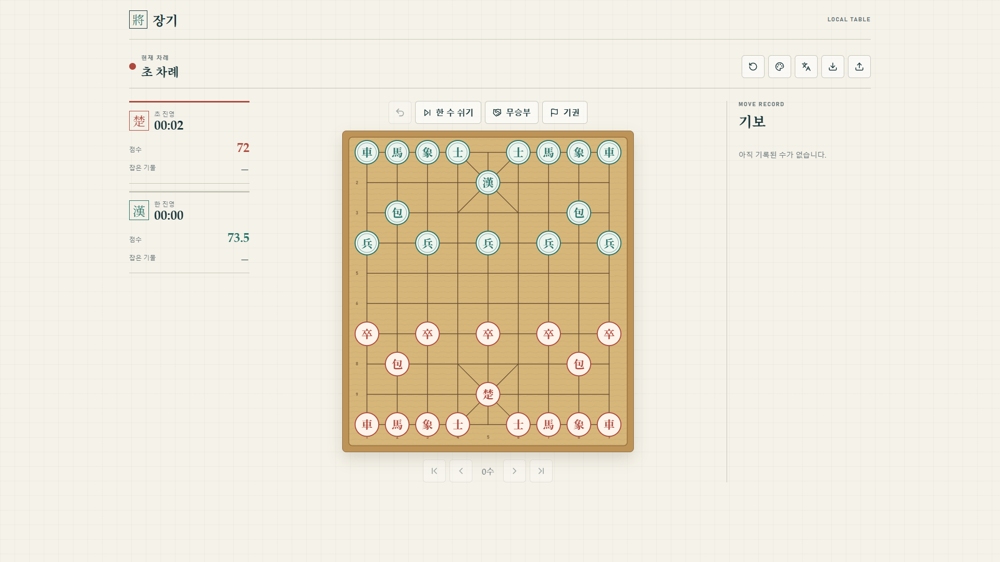
GPT-5.6 (sol)
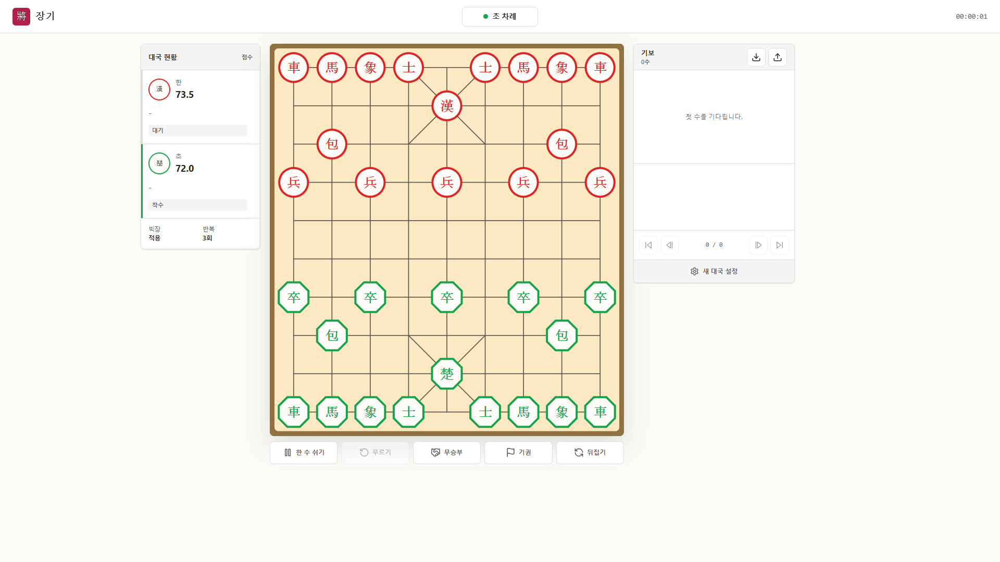
Claude Opus 5
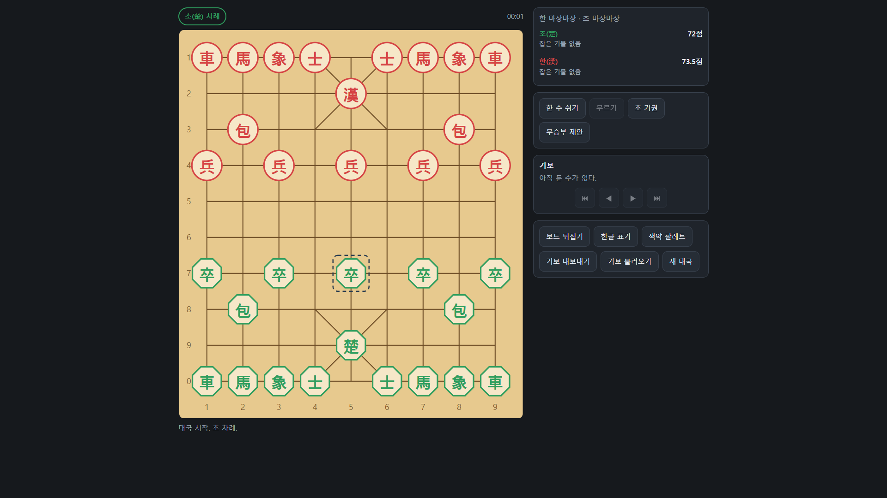
Claude Sonnet 5
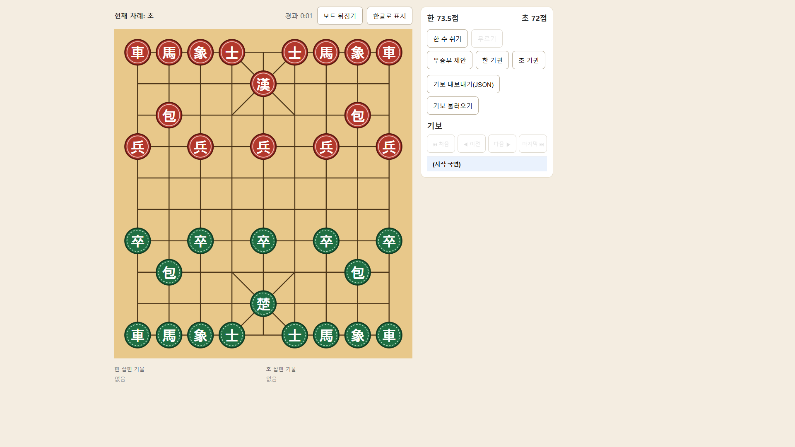
Claude Opus
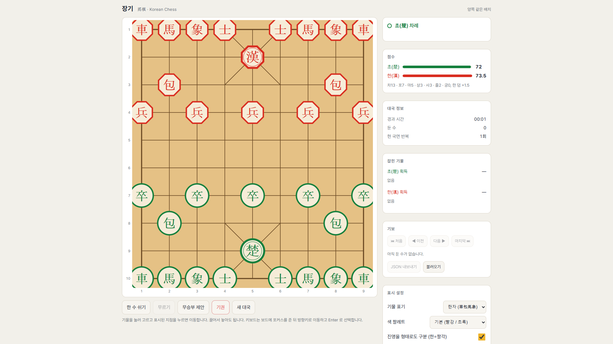
Claude Sonnet
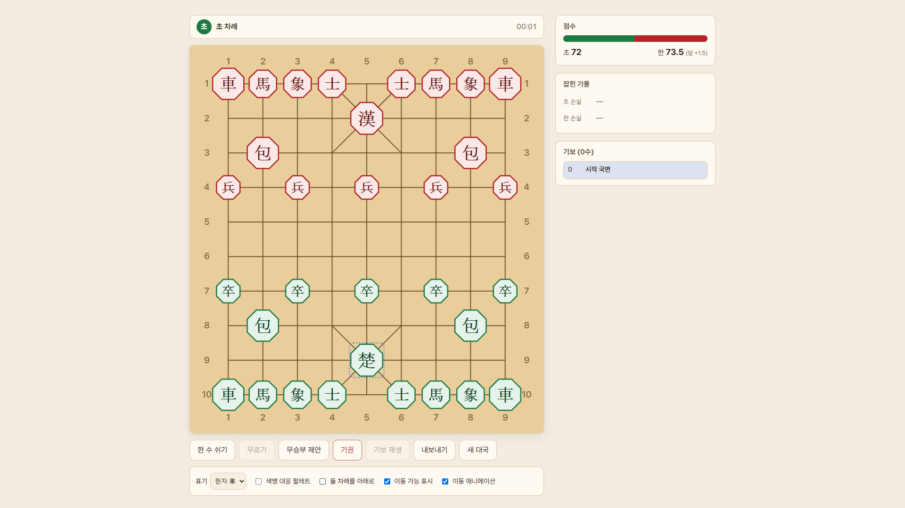
VS Code는 요청 단위 최종 라운드의 토큰만 부분적으로 남기므로, 전체 대화 원문(transcripts/*.jsonl)을 o200k_base 토크나이저로 직접 재계산했다.
라운드 수 · 툴 호출 수 · 출력 토큰은 실측값이고, 추정 입력 토큰은 아래 방법론에 따른 계산값이다.
| 구현체 | LLM 라운드 (API 호출) | 툴 호출 | 출력 토큰 (실측) |
관측 컨텍스트 (min~max) | 추정 입력 토큰 (선형 모델) | 추정 범위 (하한~상한) | 소요 시간 |
|---|---|---|---|---|---|---|---|
| lunaGPT-5.6 (luna) | 262 | 214실패 38 | 72,566 | 193,697~208,674 | 14,975,658 ~ 54,672,588 | 3.15h | |
| terraGPT-5.6 (terra) | 148 | 149실패 4 | 66,804 | 170,821~187,943 | 8,459,532 ~ 27,815,564 | 3.14h | |
| solGPT-5.6 (sol) | 262 | 226실패 7 | 82,754 | 191,179~209,490 | 14,975,658 ~ 54,886,380 | 5.82h | |
| opus5Claude Opus 5 | 127 | 145실패 3 | 78,533 | 271,397~317,723 | 7,259,193 ~ 40,350,821 | 3.16h | |
| sonnet5Claude Sonnet 5 | 168 | 185실패 9 | 93,573 | 68,248~408,349 | 9,602,712 ~ 68,602,632 | 3.14h | |
| claude_opus5 | Claude 측 사용량 별도 수령 예정 — 측정 대기 (N/A) | ||||||
| claude_sonnet5 | Claude 측 사용량 별도 수령 예정 — 측정 대기 (N/A) | ||||||
promptTokenDetails(System 26% + Tool Definitions 54%)로부터 57,159 토큰으로 산출했다.
하한 = 라운드 × 오버헤드, 상한 = 라운드 × 관측 최대 컨텍스트, 선형 모델 = 그 중간값.
프롬프트 캐시 할인은 반영되지 않았으므로 실제 과금 토큰은 이보다 훨씬 작다. 절대값이 아니라 구현체 간 상대 비교용으로 읽어야 한다.
또한 GPT-5.6 계열 세션은 transcript에 reasoning 텍스트가 남지 않아, 출력 토큰의 사고 과정 비중은 Claude 계열만 반영돼 있다.
가공하지 않은 chatSessions/*.jsonl 기록값이다. VS Code가 일부 요청에만 값을 남기기 때문에 빈칸이 많고, 이 표만으로는 세션 간 비교가 성립하지 않는다. 재계산 결과(A)의 근거를 확인하는 용도다.
| 구현체 | 요청 | promptTokens | completionTokens | copilotCredits | 응답 파트 |
|---|---|---|---|---|---|
| lunacopilot/gpt-5.6-luna / gpt-5.6-luna | 웹 버전의 장기 게임을 만들어 주세요. luna 폴더에 게임을 md 문서를 보고 작성해 주세요. P10, P11 기능은 이번 | — | — | — | 1 |
| 초와 한의 컬러가 바뀌었네. 변경해줘. | — | — | — | 1 | |
| [Terminal d8d42387-fd5a-454a-aa1a-96fb273a9757 notification: terminal | — | — | — | 0 | |
| 실행해줘. | — | — | — | 2 | |
| [Terminal 4b17b141-a322-44b7-80bc-a261bc284e4f notification: terminal | — | — | — | 0 | |
| terracopilot/gpt-5.6-terra / gpt-5.6-terra | 웹 버전의 장기 게임을 만들어 주세요. terra 폴더에 게임을 md 문서를 보고 작성해 주세요. P10, P11 기능은 이번 | 1,949 | 1,722 | 0.11 | 13 |
| 초와 한의 컬러가 바뀌었네. 변경해줘. | 175,594 | 1,839 | 55.94 | 34 | |
| [Terminal 6566eaf5-2efa-41fa-8d9e-735ae530cf1b notification: terminal | — | — | — | 0 | |
| 실행해줘. | — | — | — | 1 | |
| [Terminal 979e7ab8-42f1-4323-a56d-b745a6e7ff1a notification: terminal | — | — | — | 0 | |
| solcopilot/gpt-5.6-sol / gpt-5.6-sol | 웹 버전의 장기 게임을 만들어 주세요. sol 폴더에 게임을 md 문서를 보고 작성해 주세요. P10, P11 기능은 이번 구 | 2,018 | 1,503 | 0.07 | 13 |
| 초와 한의 컬러가 바뀌었네. 변경해줘. | 3,568 | 818 | 0.06 | 24 | |
| [Terminal 49c4aa2f-5564-4c80-93cc-e63dc28823fe notification: terminal | — | — | — | 0 | |
| 실행해줘. | — | — | — | 2 | |
| [Terminal 662183b0-930d-42da-bafa-cc22694b50f1 notification: terminal | 191,649 | 308 | 4.25 | 6 | |
| [Terminal 6d702239-e28f-41a6-b6e4-1947f8b2bcd0 notification: command c | 2,619 | 609 | 0.13 | 7 | |
| opus5copilot/claude-opus-5 / claude-opus-5 | 웹 버전의 장기 게임을 만들어 주세요. opus 폴더에 게임을 md 문서를 보고 작성해 주세요. P10, P11 기능은 이번 | — | — | — | 3 |
| 초와 한의 컬러가 바뀌었네. 변경해줘. | 294,369 | 1,291 | 179.32 | 8 | |
| 실행해줘 | — | — | — | 2 | |
| [Terminal 6c5f4559-8b3e-4158-b907-58b68957fb48 notification: terminal | — | — | — | 0 | |
| sonnet5copilot/claude-sonnet-5 / claude-sonnet-5 | 웹 버전의 장기 게임을 만들어 주세요. sonnet5 폴더에 게임을 md 문서를 보고 작성해 주세요. P10, P11 기능은 | 68,248 | 1,368 | 19.77 | 10 |
| [Terminal 4acce020-96be-4202-8c7d-f61579c8db35 notification: command c | 73,290 | 617 | 3.96 | 12 | |
| @agent Try Again | — | — | — | 3 | |
| 실행해줘. | — | — | — | 3 | |
| [Terminal 78084739-2f4b-4587-8f57-ac5170455cf0 notification: terminal | — | — | — | 0 | |
| 실행해줘. | — | — | — | 1 | |
| [Terminal 99b658a9-9222-4578-8336-d36c93f303ba notification: terminal | — | — | — | 0 | |
| claude_opus5 | 측정 대기 (N/A) | ||||
| claude_sonnet5 | 측정 대기 (N/A) | ||||
7개 프로젝트를 각각 vite build 후 vite preview로 띄우고, 동일한 Edge headless 브라우저(1920×1080)에서
① 최초 진입 화면 ② “대국 시작” 클릭 직후 초기 배치 보드를 촬영했다.
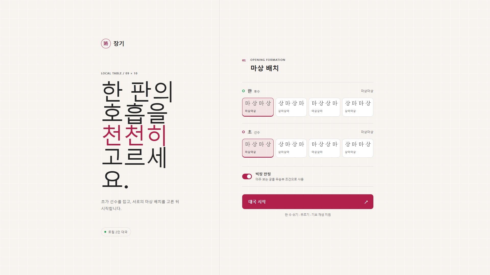
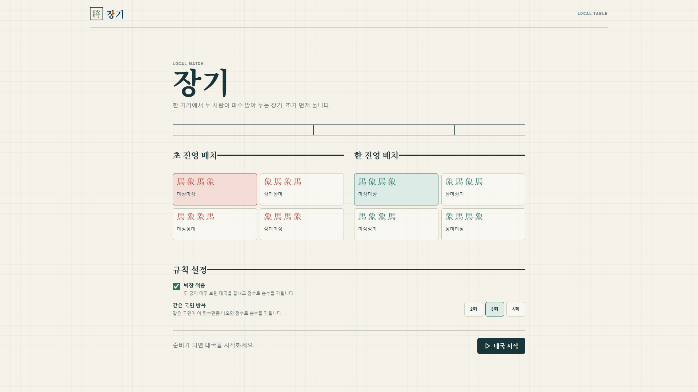
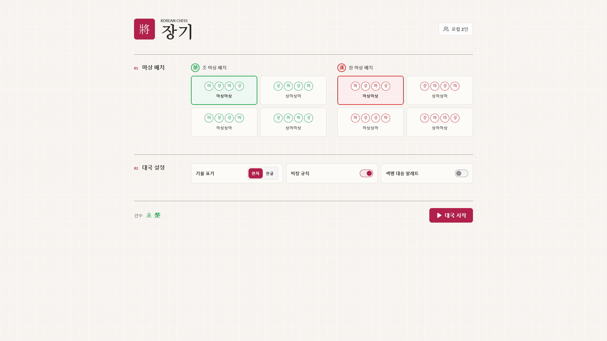
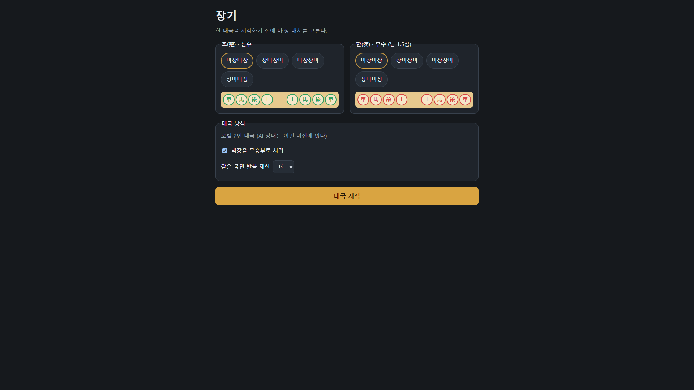
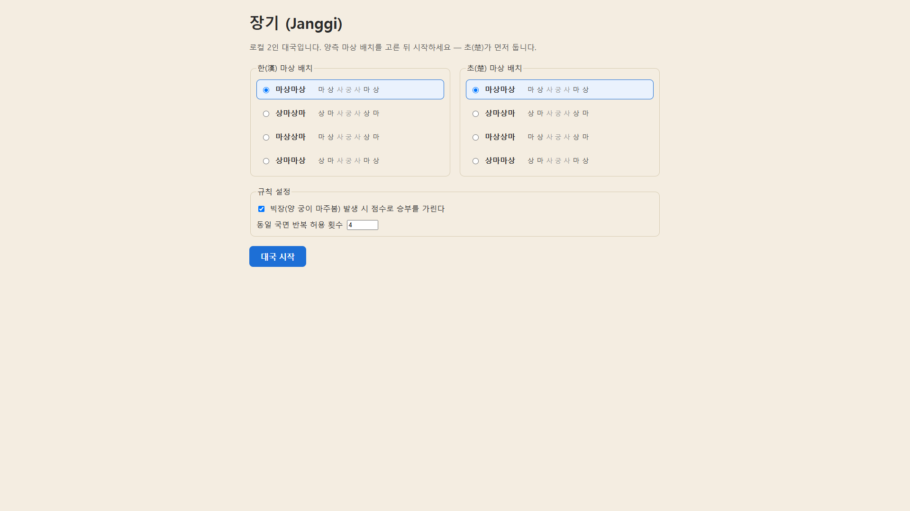
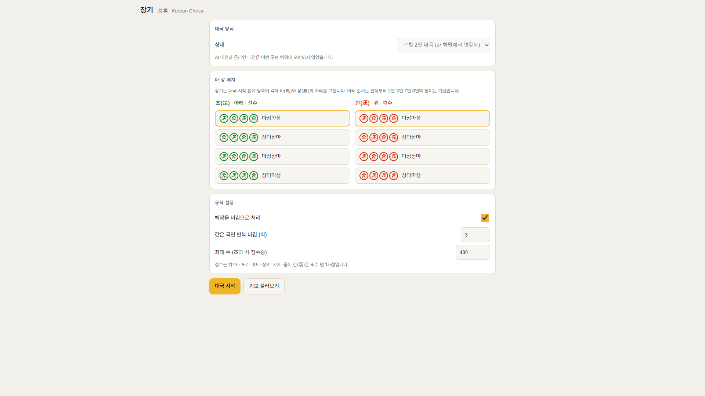
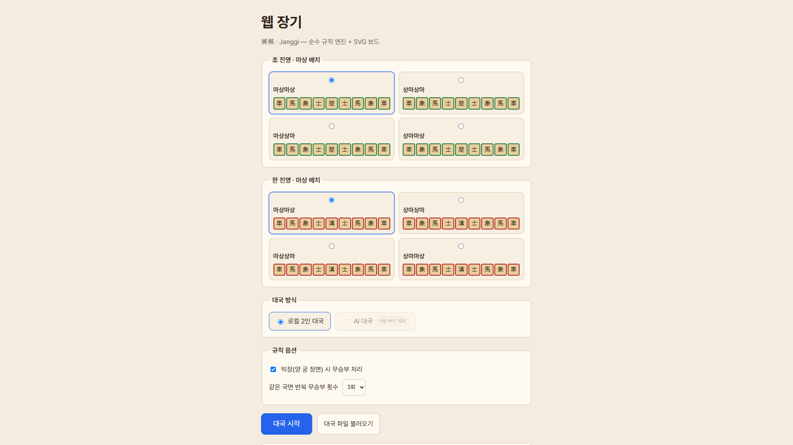
가장 객관적인 규칙 품질 지표다. 각 프로젝트가 자기 테스트에 고정해 둔 초기 국면(마상마상, 초 선수) 합법수 트리 노드 수를 모아 비교했다. 모든 테스트는 실제로 통과한다.
| 구현체 | depth 1 | depth 2 | depth 3 | 계수 규칙 | 판정 | 출처 |
|---|---|---|---|---|---|---|
| luna | 31 | 961 | 30,661 | 한 수 쉬기 제외 | 불일치 (+155) | src/engine/__tests__/perft.test.ts |
| terra | 31 | 961 | 30,506 | 한 수 쉬기 제외 | 표준값 일치 | src/engine/verification.test.ts |
| sol | 32 | 1,024 | 33,506 | 한 수 쉬기 포함 | 표준값 일치 | src/engine/validation.test.ts |
| opus5 | 31 | 961 | 30,506 | 한 수 쉬기 제외 | 표준값 일치 | src/engine/__tests__/perft.test.ts |
| sonnet5 | 32 | 1,024 | 33,506 | 한 수 쉬기 포함 | 표준값 일치 | src/engine/__tests__/perft.test.ts |
| claude_opus5 | 31 | 961 | 30,506 | 한 수 쉬기 제외 | 표준값 일치 | src/engine/__tests__/perft.test.ts (마상 배치 4종 전부 고정: MSMS 30506 / SMSM 30506 / MSSM 30353 / SMMS 30659) |
| claude_sonnet5 | 31 | 961 | 30,506 | 한 수 쉬기 제외 | 표준값 일치 | src/engine/perft.test.ts |
31 / 961 / 30506, 포함하면 32 / 1024 / 33506이 나온다.
즉 6개 구현체는 규칙 해석이 완전히 일치하며 세는 방식만 다르다. 오직 luna의 30,661만 어느 쪽으로도 설명되지 않는다.
luna/src/engine/moves/sang.ts모든 프로젝트에서 vitest run, tsc -b, vite build를 실제로 실행한 결과다.
| 구현체 | 파일 | 총 LOC | 레이어 구성 | engine | UI | test LOC | 테스트 케이스 | 번들 JS | test | tsc | build |
|---|---|---|---|---|---|---|---|---|---|---|---|
| luna | 33 | 2,133 | 751 | 994 | 361 | 25 | 174.34 kB | ✔ | ✔ | ✔ | |
| terra | 39 | 3,934 | 1,057 | 1,769 | 410 | 42 | 180 kB | ✔ | ✔ | ✔ | |
| sol | 44 | 4,071 | 1,064 | 2,360 | 579 | 55 | 184.13 kB | ✔ | ✔ | ✔ | |
| opus5 | 46 | 3,682 | 971 | 1,436 | 789 | 70 | 174.76 kB | ✔ | ✔ | ✔ | |
| sonnet5 | 47 | 2,908 | 740 | 1,170 | 737 | 213 | 218.44 kB | ✔ | ✔ | ✔ | |
| claude_opus5 | 57 | 5,716 | 1,608 | 2,556 | 1,382 | 143 | 182.84 kB | ✔ | ✔ | ✔ | |
| claude_sonnet5 | 57 | 4,772 | 1,096 | 2,068 | 894 | 108 | 180.72 kB | ✔ | ✔ | ✔ |
프롬프트 문서의 각 단계가 소스에 실제로 반영됐는지 60개 신호로 판정했다. 셀에 마우스를 올리면 미충족 항목이 보인다. P10·P11은 구현 대상에서 제외돼 집계하지 않았다.
| 구현체 | P0 프로젝트 헌법 | P1 RULES.md | P2 데이터 모델 | P3 기물별 이동 생성기 | P4 합법수·장군 | P5 승패·무승부 | P6 규칙 검증 | P7 보드 렌더링 | P8 게임 흐름 | P9 기보 저장·재생 | P12 접근성·배포 | 합계 |
|---|---|---|---|---|---|---|---|---|---|---|---|---|
| luna | 3/3 | 3/3 | 5/5 | 7/7 | 5/5 | 5/6 | 3/3 | 8/8 | 8/8 | 4/4 | 4/8 | 55/60 |
| terra | 3/3 | 3/3 | 5/5 | 7/7 | 5/5 | 6/6 | 3/3 | 8/8 | 8/8 | 4/4 | 8/8 | 60/60 |
| sol | 3/3 | 3/3 | 5/5 | 7/7 | 5/5 | 6/6 | 3/3 | 8/8 | 8/8 | 4/4 | 8/8 | 60/60 |
| opus5 | 2/3 | 3/3 | 5/5 | 7/7 | 5/5 | 6/6 | 3/3 | 8/8 | 8/8 | 4/4 | 8/8 | 59/60 |
| sonnet5 | 2/3 | 3/3 | 5/5 | 7/7 | 5/5 | 6/6 | 3/3 | 8/8 | 8/8 | 4/4 | 5/8 | 56/60 |
| claude_opus5 | 3/3 | 3/3 | 5/5 | 7/7 | 5/5 | 6/6 | 3/3 | 8/8 | 8/8 | 4/4 | 8/8 | 60/60 |
| claude_sonnet5 | 3/3 | 3/3 | 5/5 | 7/7 | 5/5 | 6/6 | 3/3 | 8/8 | 8/8 | 4/4 | 8/8 | 60/60 |
create_file(opus5 53회, sonnet5 44회)로 설계 후 한 번에 써 내려갔고,
GPT 계열은 apply_patch와 run_in_terminal·execution_subagent를 반복하며 점진적으로 수렴했다.data/usage-claude.json에 넣고 node scripts/build-report.mjs를 다시 실행하면 반영된다.